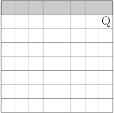
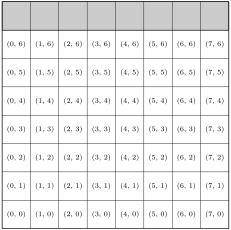

What do you think makes a game fun? What do you think makes a game interesting? How are these lists similar and different?
This section is just about teaching you a few more games. All of these games are heap games, which basically means that the games will be played by manipulating piles of tokens. And since tokens can be pretty much anything (rocks, buttons, toothpicks, etc.), the games are accessible to anyone.
The reason we are taking the time to expand the list of games we can play now is so that when we get to working with different types of analysis tools, we will already have a few different games to try them on. This also gives us an opportunity to study the games on their own terms before we start to impose too many mathematical structures on them.
Subsection2.3.1Grundy’s Game
Game2.12.Grundy’s Game.
Grundy’s game is a two-player heap game. The game starts with one heap containing some number of tokens. (10 tokens is a typical starting amount.) Players take turns splitting the heap into two nonempty heaps of different sizes. Play continues until there are no more valid moves. The player who makes the last move is the winner.
Figure2.13.Video instructions for Grundy’s game
If we were starting with 10 tokens, the allowable first moves are to break the heap into 9+1, 8+2, 7+3, or 6+4. But you would not be allowed to do 5+5 because the two heaps are the same size. The next player will then need to make a move from the available heaps. They can only alter one heap each turn.
The rules don’t explciitly state how the game ends, but it does tell you the necessary information to figure it out. For a heap of size 1, there are no valid moves because we cannot turn it into two nonempty heaps. For a heap of size 2, you can turn it into two heaps, but they would be the same size. This means that there are no valid moves on heaps of size 2. These heaps are sometimes referred to as "dead" heaps because of this.
Subsection2.3.2Wythoff’s Game
Game2.14.Wythoff’s Game.
Wythoff’s game is a two-player heap game. The game starts with two heap containing a different number of tokens. (A typical starting game has heaps of size 6 and 7.) Players take turns removing tokens from the heaps in one of two ways: (1) They may remove any number of tokens from one of the heaps. (2) They may remove the same number of tokens from both heaps. The player who takes the last token is the winner.
Figure2.15.Video instructions for Wythoff’s game
Wythoff’s game is a variation on Nim. The ability to take tokens from multiple piles at the same time is a new rule that changes the dynamic of the game.
This game is interesting because it can be represented in a completely different manner. Imagine a chess board. A queen sits one space below the top-right corner of the board. Players take turns moving the queen left, down, or diagonally down-left (moves that a queen might normally make in chess). The goal is to be the player that moves the queen to the bottom-left corner.

Initially, these two games may seem completely different from each other. The idea here is not that the game itself (the rules) are exactly the same, but that there is an equivalence between the two games. In mathematical terms, we need to create an isomorphism betweeen the two games. This means that we need to find a way to take a game state in the heap game and match it up with a game state of the chess board game, and we also need to confirm that the valid moves in the heap game correspond to valid moves in the chess board game.
To see how these games are connected, we are going to label the spaces on the chess board with ordered pairs corresponding to their position. The coordinates that we get from this correspond to the sizes of the heaps. Notice that a queen’s move left is like taking tokens from the first heap, a queen’s move down is like taking tokens from the second heap, and a down-left movement is taking the same number from both heaps.
Another way of saying this is that if I told you a move in the heap game, you could find an equivalent move in the chess board game. And if I told you a move in the chess board game, you could find an equivalent move in the heap game.

Showing that two seemingly different things are basically the same is one of the core skills of mathematical reasoning. We won’t see too much of it in this course, but this is an idea that comes up in almost every branch of mathematics, and the ability to see the same concept in multiple ways gives us insight into problems that we might not otherwise have.
Subsection2.3.3Simple Circular Nim
Game2.16.Simple Circular Nim.
Simple Ciruclar Nim is a two-player heap game. The game starts with a number of tokens placed in a circle. (A typical starting number is 12.) Players take turns removing up to three consecutive tokens. Tokens are not consecutive if there is a gap where a token was removed on a previous turn. The player who takes the last token is the winner.
Figure2.17.Video instructions for Simple Circular Nim
Simple Circular Nim is a variant of Nim, but instead of starting with multiple heaps, the heaps are generated through the moves of the game. As tokens are removed from the circle, it creates gaps which become the borders of the heaps. The players can only take tokens from one heap, so the gaps become part of the strategy.
This game is called "Simple" Circular Nim because there’s a more complex version of circular nim that is an area of active game theory research. In the more complex version, instead of a circle of individual tokens, the circle consists of heaps of tokens, and the rules for how tokens are taken from the heap are different.
We observed that for heaps of size 1 and 2, there are no valid moves. For what sizes of heaps is there exactly one valid move?
2.
For what sizes of heaps are there exactly two valid moves?
3.
Create the game tree for Grundy’s game starting with 7 tokens. Identify as many P-positions and N-positions as you can.
Wythoff’s Game.
4.
Make a list of all positions that are one move away from the end of the game (assuming smart players). Are these P-positions or N-positions?
5.
On a chess board, shade in all of the positions that are one move away from the end of the game. Do you think the representation of these positions is eaiser to understand as a list of positions, as a sketch of a chessboard, or do they both seem the same to you?
6.
Consider the position with one heap of one token and one heap of two tokens. Analyze the possible moves. Is this an N-position or a P-position?
7.
Dertermine as many N-positions and P-positions as you can for this game.
Simple Circular Nim.
8.
Suppose that all that remains in the game is an even number of single-token heaps. Is this a P-position or an N-position?
9.
Suppose that all that remains in the game is an odd number of single-token heaps. Is this a P-position or an N-position?
10.
Create a game tree for the circular nim game with 6 tokens. Is the starting position a P-position or an N-position?